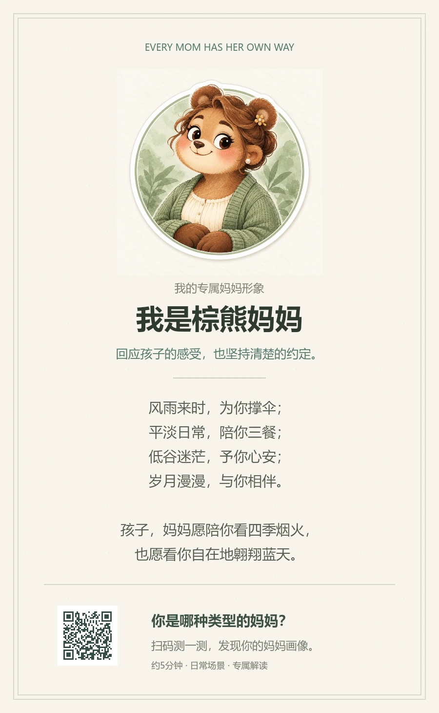
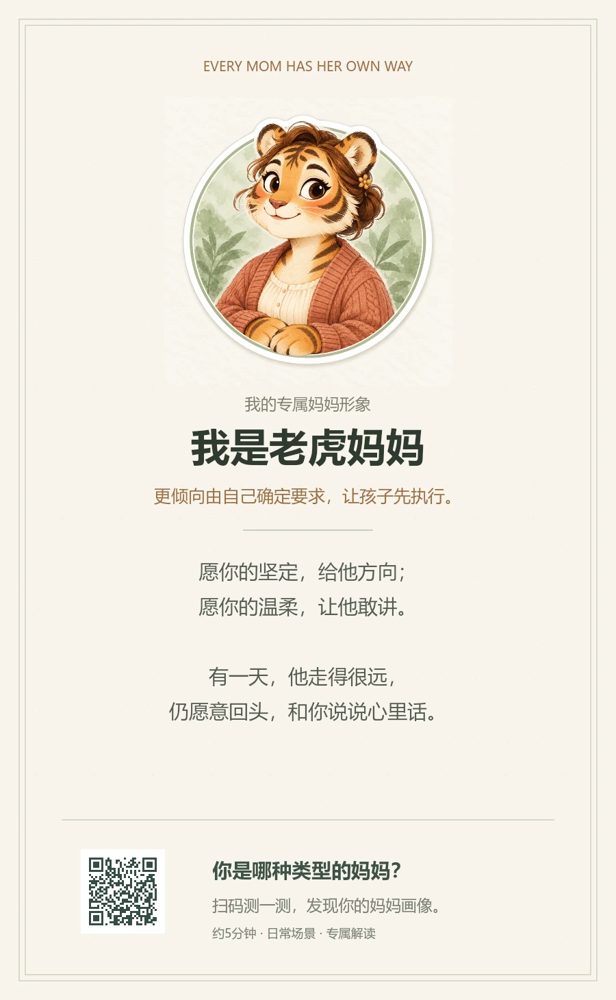
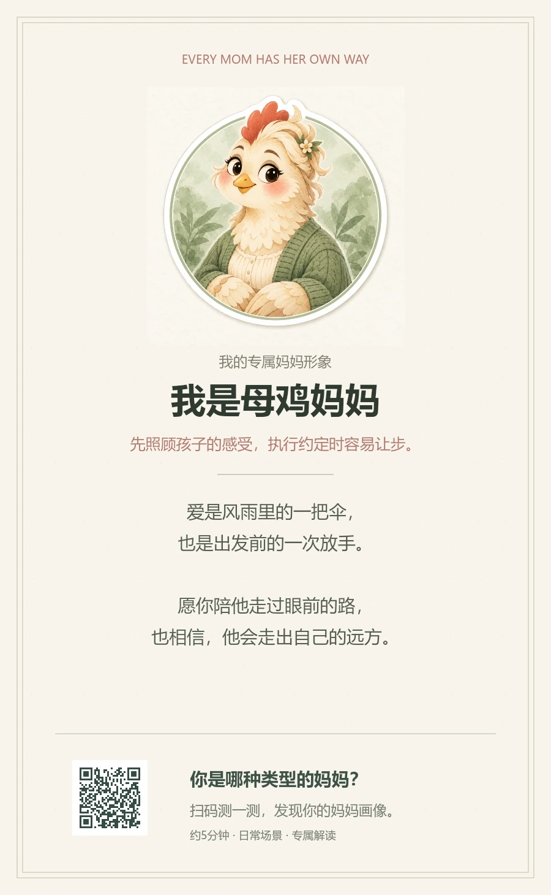
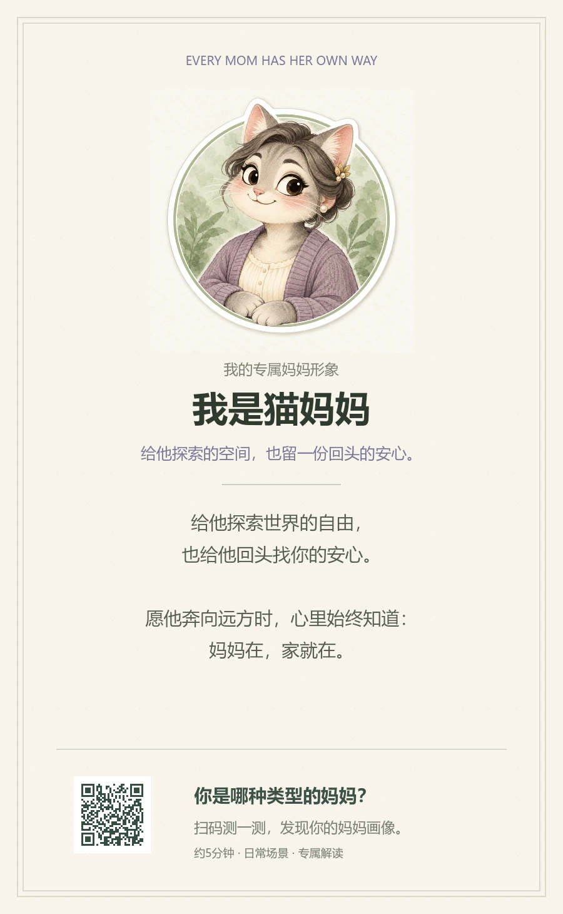
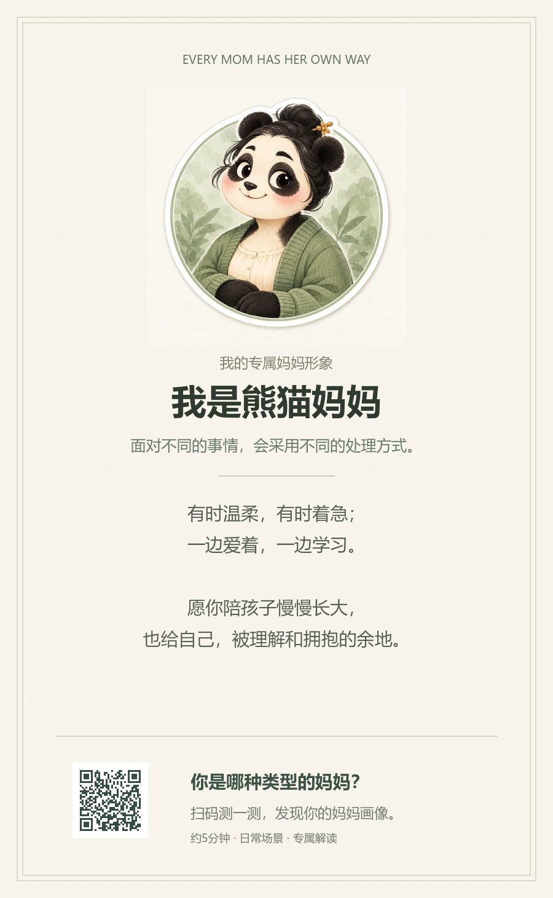

<!doctype html><html lang="zh-CN"><meta charset="utf-8"><meta name="viewport" content="width=device-width,initial-scale=1"><title>五种妈妈 · 新版图文卡</title><style>*{box-sizing:border-box}body{margin:0;background:#f1eee5;color:#4e5e4a;font:14px/1.8 -apple-system,BlinkMacSystemFont,'Microsoft YaHei',sans-serif}header{max-width:1280px;margin:36px auto 25px;padding:0 22px}h1{font-family:'Songti SC','SimSun',serif;font-size:27px;margin:0 0 8px;font-weight:550}header p{color:#93937f;margin:0}.cards{max-width:1280px;margin:0 auto 40px;padding:0 20px;display:grid;grid-template-columns:repeat(auto-fit,minmax(260px,1fr));gap:24px}figure{margin:0}img{width:100%;height:auto;display:block;box-shadow:0 8px 28px #586a4d0a}figcaption{display:flex;justify-content:space-between;gap:10px;align-items:center;margin:12px 2px 0}a{color:#6d8164;font-size:12px;text-decoration:none}span{font-size:13px}@media(max-width:550px){header{margin-top:24px}.cards{gap:28px;grid-template-columns:1fr;max-width:460px}h1{font-size:24px}}</style><header><h1>每一份爱，都有自己的样子。</h1><p>五种妈妈 · #223 水彩贴纸风 · 新版形象与寄语</p></header><main class="cards"><figure><figcaption><span>棕熊妈妈</span><a href="https://honeyivan96-ctrl.github.io/mama-assessment-demo/?v=223#card=bear" target="_blank" rel="noopener">查看分享页 →</a></figcaption></figure><figure><figcaption><span>老虎妈妈</span><a href="https://honeyivan96-ctrl.github.io/mama-assessment-demo/?v=223#card=tiger" target="_blank" rel="noopener">查看分享页 →</a></figcaption></figure><figure><figcaption><span>母鸡妈妈</span><a href="https://honeyivan96-ctrl.github.io/mama-assessment-demo/?v=223#card=hen" target="_blank" rel="noopener">查看分享页 →</a></figcaption></figure><figure><figcaption><span>猫妈妈</span><a href="https://honeyivan96-ctrl.github.io/mama-assessment-demo/?v=223#card=cat" target="_blank" rel="noopener">查看分享页 →</a></figcaption></figure><figure><figcaption><span>熊猫妈妈</span><a href="https://honeyivan96-ctrl.github.io/mama-assessment-demo/?v=223#card=panda" target="_blank" rel="noopener">查看分享页 →</a></figcaption></figure></main></html>